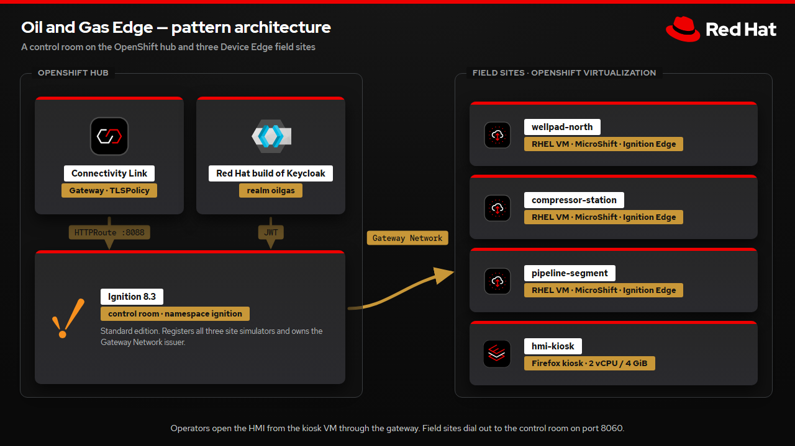
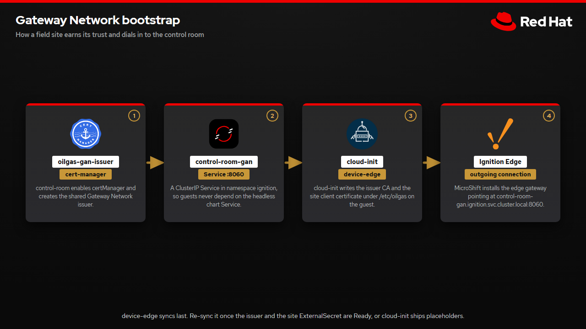
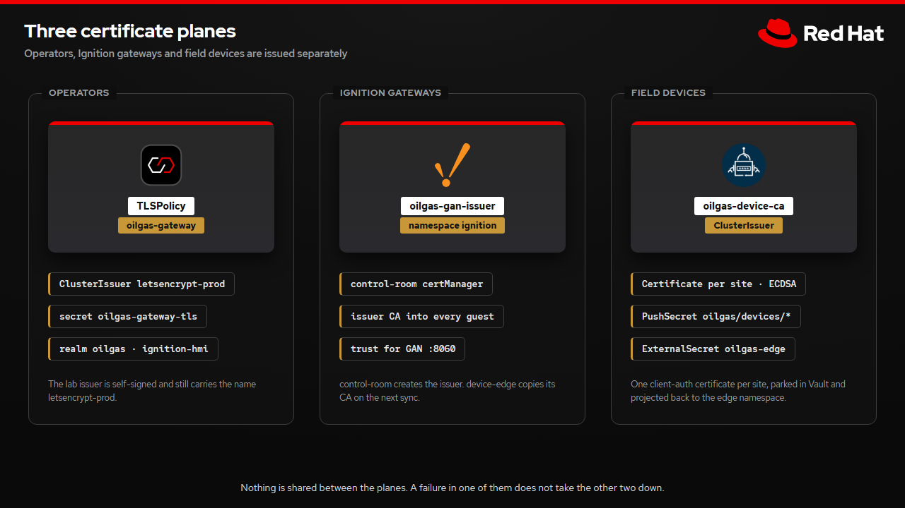
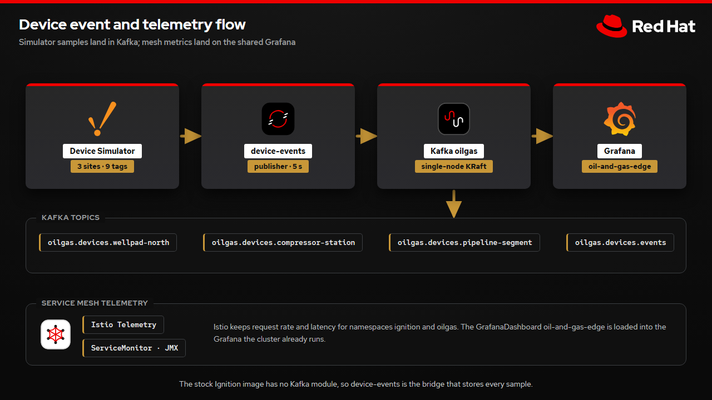

An Ignition 8.3 control room on the hub, three Red Hat Device Edge field sites on OpenShift Virtualization, device events in Kafka, and Connectivity Link as the only door operators use.
Industrial sites are not in the data center. The control room is. This pattern lays down that split as a single GitOps deployment: a control-room Ignition Gateway runs on the OpenShift hub, three field sites run as RHEL virtual machines on OpenShift Virtualization with Red Hat Device Edge (MicroShift) and Ignition Edge inside, and the two halves meet over the Ignition Gateway Network. Device samples are persisted in Kafka so history survives a closed HMI, and operators reach the HMI only through a Connectivity Link gateway that demands a JWT from a dedicated Keycloak realm.
Ignition 8.3 Standard, wrapped so it runs under an OpenShift SecurityContextConstraints and exposes a routable Gateway Network Service instead of the chart's headless one.
Well pad, compressor station and pipeline segment, each a RHEL guest running MicroShift and Ignition Edge, dialling out to the control room on port 8060.
Operators, Ignition gateways and field devices are issued separately. Device certificates are parked in Vault and projected back into the edge namespace.
A Connectivity Link Gateway with a TLSPolicy and an AuthPolicy. The OpenShift Route that the Ignition chart would create is switched off.
The stock Ignition image has no Kafka module, so a small publisher writes every simulator sample to one topic per site plus a shared event topic.
Argo CD owns every object through ordered sync waves. There is no Podman unit push and no Ansible Automation Platform in the loop.

| Site | Role | Simulator tags |
|---|---|---|
wellpad-north | Upstream well pad | wellhead pressure, flow rate, tank level |
compressor-station | Midstream compression | suction pressure, discharge pressure, vibration |
pipeline-segment | Pipeline segment | line pressure, temperature, leak indicator |
The control room registers all three simulators. Each edge gateway registers only its own, under the same name, so a tag path resolves identically whether you read it in the control room or on site.
hmi-kiosk (2 vCPU / 4 GiB) is the operator's screen, not a fourth field site. Firefox opens
https://ignition.<cluster-domain> and nothing else runs there: no MicroShift, no Ignition,
no Gateway Network session. The three field VMs dial out to the control room. The kiosk only walks the same
door a laptop walks, from inside the cluster, so the demo does not depend on a workstation that trusts the lab CA.
This pattern does not install Ansible Automation Platform. GitOps still installs and reconciles the hub. AAP would sit beside that, for day-2 actions on the guests, and it would not replace the kiosk.
Case: a leak indicator on the pipeline segment. The publisher writes
leak-indicator to oilgas.devices.pipeline-segment. An Event-Driven Ansible rulebook,
which is not in this repository, subscribes to that topic. When the value leaves zero, Automation Controller
runs a job template against inventory host pipeline-segment (the field VM, user
cloud-user). The playbook re-runs /usr/local/bin/oilgas-bootstrap-edge.sh. If the
indicator stays high, a second task calls the Ignition configuration API on
http://control-room-http.ignition.svc:8088, inside the cluster and not through the public
gateway, and disables that device. A follow-up job waits until cert-manager has renewed the site certificate
in Vault and restarts the edge gateway. Argo CD keeps owning the charts.
| Namespace | Owner | Holds |
|---|---|---|
ignition | this pattern | Control-room Gateway, SCC, GAN and HTTP Services, simulator registration Job |
oilgas | this pattern | Gateway, TLSPolicy, HTTPRoute, AuthPolicy, Kafka, device certificates, telemetry |
oilgas-edge | this pattern | Field VMs, kiosk VM, cloud-init Secrets, projected device certificates |
cert-manager | the cluster template | ClusterIssuer configuration pulled from rhbk-cert |
rhbk-operator | the cluster template | Existing Keycloak CR rhbk, plus the imported oilgas realm |
values-global.yaml # pattern name + main.variant: hub
pattern-metadata.yaml
variants/hub/values-hub.yaml # applications and the AMQ Streams subscription
charts/hub/control-room/ # Ignition 0.2.5 + SCC + GAN and HTTP Services
charts/hub/oilgas-gateway/ # Gateway, TLSPolicy, HTTPRoute, AuthPolicy
charts/hub/oilgas-identity/ # realm oilgas, client ignition-hmi
charts/hub/device-certs/ # oilgas-device-ca, PushSecret, ExternalSecret
charts/hub/mock-devices/ # Programmable Device Simulator registration
charts/hub/kafka/ # single-node KRaft cluster and topics
charts/hub/device-events/ # publisher for device events
charts/hub/telemetry/ # Istio Telemetry + Grafana dashboard
charts/hub/device-edge/ # field VMs, MicroShift cloud-init, kiosk
values-secret.yaml.template
docs/sizing.md
Argo CD applies the charts in sync-wave order. The order is not cosmetic: device-edge renders
cloud-init by reading Secrets that earlier waves create, so it has to come last.
| Wave | Application | Namespace | What it does |
|---|---|---|---|
5 | cert-manager-config | cert-manager | Pulled from rhbk-cert with ACME off and self-signed on. Creates the lab CA. |
6 | oilgas-identity | rhbk-operator | KeycloakRealmImport for realm oilgas and public client ignition-hmi. |
7 | device-certs | oilgas | ClusterIssuer oilgas-device-ca, one Certificate per site, PushSecret to Vault, ExternalSecret back to the edge. |
8 | oilgas-gateway | oilgas | Istio Gateway, TLSPolicy, HTTPRoute and the oilgas-login OIDCPolicy. |
9 | kafka | oilgas | Single-node KRaft cluster oilgas on Kafka 4.1.0, four topics, JMX ServiceMonitor. |
10 | control-room | ignition | Ignition 8.3 Standard, SCC ignition, GAN Service :8060, HTTP Service :8088. |
15 | mock-devices | ignition | Job that POSTs three Programmable Device Simulators to the configuration API. |
16 | device-events | oilgas | Publisher that writes a sample every 5 s to the per-site topics and to oilgas.devices.events. |
17 | telemetry | oilgas | Istio Telemetry for ignition and oilgas, plus the GrafanaDashboard. |
20 | device-edge | oilgas-edge | Three field VMs with MicroShift cloud-init, plus the Firefox kiosk VM. |
Kafka is the only operator this pattern subscribes, because it is the only one the Field Content template does not already provide.
| Operator | Namespace | Channel | Source |
|---|---|---|---|
| AMQ Streams | openshift-operators | stable | redhat-operators |
kubevirt-hyperconverged is present in variants/hub/values-hub.yaml but commented out.
Uncomment it, and set device-edge cnv.enabled=true, only on a cluster that has no
OpenShift Virtualization yet. Applying a second HyperConverged on the template cluster is how you break it.

control-room enables certManager and creates the shared issuer oilgas-gan-issuer.control-room-gan exposes port 8060 to the guests, and Service control-room-http exposes 8088 to the HTTPRoute. Both exist because the Service the upstream chart creates is headless, which makes a poor Gateway backend and poor cluster DNS for a VM.device-edge renders cloud-init, copying the issuer CA and that site's client certificate into /etc/oilgas on the guest.control-room-gan.ignition.svc.cluster.local:8060.lookup. If device-edge
syncs before the issuer Secret and the site ExternalSecret exist, the guest gets a commented placeholder
instead of a certificate. Re-sync device-edge and the next VM boot picks up the real material;
on a VM that is already running, re-run /usr/local/bin/oilgas-bootstrap-edge.sh.
wellpad-north (and the other sites once their VMs finish bootstrap). That row is the MicroShift device. It does not require the API token. Designer → Connections is a different page: it lists Ignition Designer sessions and stays empty until someone opens the Designer./etc/oilgas/api-token exists on the guest. Create that token in the edge Gateway UI and re-run /usr/local/bin/oilgas-bootstrap-edge.sh.register-mock-devices registers the same three simulators on the control room. It stays failed until Vault ignition-api/token is set. That is a second view of the same tag names, not a substitute for the Gateway Network row.| Path | Contents |
|---|---|
/etc/oilgas/site.env | Site name, control-room GAN host and port, Ignition chart coordinates |
/etc/oilgas/gan-ca.crt | CA of oilgas-gan-issuer, also added to the guest trust store |
/etc/oilgas/device.crt, device.key, device-ca.crt | Site client certificate from oilgas-device-ca |
/etc/oilgas/mock-device.json | Programmable Device Simulator definition for this site |
/etc/oilgas/api-token | Ignition API token. Create it, then re-run the bootstrap script. |
/usr/local/bin/oilgas-bootstrap-edge.sh | Installs MicroShift, deploys Ignition Edge, registers the simulator. Idempotent. |
Podman is installed on the guest as an image tool only. Ignition Edge runs on MicroShift, deployed with the
same charts.ia.io/ignition chart as the control room, at edition edge.

A TLSPolicy on the Gateway hands the certificate lifecycle to cert-manager, and the oilgas realm
fronts the HMI. The lifetime is 2160h with renewBefore: 360h — 90 days, renewed
15 days out.
cert-manager-config is deployed with
acme.enabled=false and selfSigned.enabled=true, but the upstream chart still names the
ClusterIssuer letsencrypt-prod. It is an internal CA, not Let's Encrypt. Keeping the name means
the TLSPolicy issuerRef does not have to change between a lab and a public cluster.
The control room owns oilgas-gan-issuer. Every edge gateway trusts the CA behind it, which is what
makes the Gateway Network connection on :8060 mutual rather than merely encrypted.
A dedicated ClusterIssuer, oilgas-device-ca, issues one client auth certificate per site
with an ECDSA P-256 key. External Secrets pushes each one to Vault at oilgas/devices/<site> and
an ExternalSecret projects it back into oilgas-edge, where cloud-init can read it. The refresh
interval is one hour.
oc get clusterissuer oilgas-device-ca
oc get certificate -n oilgas
oc get pushsecret -n oilgas
oc get externalsecret -n oilgas-edge
cert-manager reads ClusterIssuer CA Secrets from its own namespace, which is why ca.namespace
defaults to cert-manager rather than oilgas.
oilgas-identity does not deploy Keycloak. It imports a realm into the Keycloak CR named
rhbk that the cluster template already runs, so the pattern adds an identity boundary without
owning an identity provider.
| Object | Value |
|---|---|
| Realm | oilgas — display name "Oil and Gas", sslRequired: external, self-registration off |
| Client | ignition-hmi — public, standard flow and direct access grants on, implicit flow off |
| Redirect URI | https://ignition.<cluster-domain>/* and https://ignition.<cluster-domain>/auth/callback |
| Gateway | oilgas-gateway, gatewayClassName istio, hostname ignition.<cluster-domain> |
| Backend | control-room-http.ignition:8088 |
| OIDCPolicy | oilgas-login (extensions.kuadrant.io/v1alpha1) targets HTTPRoute ignition. Browsers redirect to the realm and return to https://ignition.<cluster-domain>/auth/callback. It must not target the Gateway: that merges the jwt cookie check into the callback and the browser loops. |
The OpenShift Route that the Ignition chart would otherwise create is disabled
(ignition.ingress.enabled=false). The gateway is the only way in. OIDCPolicy
oilgas-login redirects the browser to oidc.issuerURL
and the callback is https://ignition.<cluster-domain>/auth/callback. That issuer host is the
Keycloak Route, not a guessed name. curl without
that session does not return the Ignition UI. The realm import includes user operator.
Its password is in Secret oilgas-operator in the Keycloak namespace.
/entsog is ENTSOG Transparency (transparency.entsog.eu): gas flows and nominations,
no upstream key, and the same OIDCPolicy as Ignition.

device-events is a small Deployment that reuses the AMQ Streams Kafka image already pulled for
the broker (registry.redhat.io/amq-streams/kafka-41-rhel9, pinned by digest because the operator
does not publish a 4.1.0 tag). Every 5 seconds it emits one sample per tag, with the same tag names the simulators use, to that
site's topic and to the shared event topic. Values oscillate locally, so history keeps accumulating even
when nobody has the HMI open.
{"site":"wellpad-north","device":"wellpad-north","tag":"wellhead-pressure","value":1463.2,"ts":"2026-11-24T12:00:05Z"}| Topic | Carries |
|---|---|
oilgas.devices.wellpad-north | wellhead-pressure, flow-rate, tank-level |
oilgas.devices.compressor-station | suction-pressure, discharge-pressure, vibration |
oilgas.devices.pipeline-segment | line-pressure, temperature, leak-indicator |
oilgas.devices.events | Every sample from every site |
The cluster is a single-node KRaft Kafka 4.1.0 with a 20 GiB gp3-csi volume, sized for
a demonstration and not for production durability. A ServiceMonitor scrapes the JMX exporter.
The Streams console is a separate operator from the broker (amq-streams-console, channel stable).
It reads listener plain and does not create a Kafka user. User-workload monitoring must be enabled or the metrics pane stays empty. The four topics still appear without it.
telemetry keeps Istio request-rate and latency metrics for namespaces ignition and
oilgas, and loads a GrafanaDashboard named oil-and-gas-edge into the Grafana instance the
cluster template already runs (openshift-cluster-observability-operator, instance selector
dashboards: grafana-observability). No second Grafana is installed.
The OpenShift console shows Kiali through OSSMConsole ossmconsole.
The tracing chart installs Tempo (TempoMonolithic oilgas) and a Kiali CR,
and points the mesh provider otel-tracing at tempo-oilgas.tempo.svc.cluster.local:4317.
Spans are the mesh traffic in namespaces ignition and oilgas, sampled at 1 percent.
On a cluster that already runs Tempo, set tracing.enabled to false and point telemetry at that provider.
oc run kafka-consume -n oilgas --rm -it --restart=Never \
--image=quay.io/strimzi/kafka:0.45.0 -- \
/opt/kafka/bin/kafka-console-consumer.sh \
--bootstrap-server oilgas-kafka-bootstrap:9092 \
--topic oilgas.devices.wellpad-north \
--from-beginning --max-messages 1Order the cluster from the Field Content template. The numbers below are what the three field VMs, the kiosk, Ignition and Kafka actually need, not a theoretical floor.
| Resource | Requested | Note |
|---|---|---|
| OpenShift | 4.20, or the template version | Needs OpenShift Virtualization with host CPU passthrough |
| Control plane | 3 × 8 vCPU / 32 GiB (m5a.2xlarge) | — |
| Workers | 3 × 16 vCPU / 64 GiB (m5a.4xlarge) | Take m5a.8xlarge if the catalog offers it. m5a.4xlarge is the minimum, and the margin is thin. |
| Storage | RWO gp3-csi, 500 GiB free | Field VMs are 80 GiB root plus 40 GiB data each |
| DNS | Wildcard *.apps.<cluster-domain> | The self-signed issuer means no Route 53 is required |
| Workload | CPU | Memory | Disk |
|---|---|---|---|
| Field VM × 3 | 4 vCPU | 16 GiB | 80 GiB root + 40 GiB data |
hmi-kiosk | 2 vCPU | 4 GiB | 40 GiB |
| Control-room Ignition | 1 → 4 | 2 → 8 GiB | 20 GiB |
| Kafka | 1 → 2 | 2 → 4 GiB | 20 GiB |
That is 52 GiB of VM memory before the Ignition limit. Below three workers the three field VMs do not fit at the same time. Full detail is in docs/sizing.md.
Confirm the cluster domain and the secret store before anything else:
oc get ingresses.config.openshift.io cluster -o jsonpath='{.spec.domain}{"\n"}'
oc get clustersecretstore
The charts expect a ClusterSecretStore named vault-backend. If the template named it something
else, override it on device-certs and mock-devices.
oilgas-identity imports the realm into the Keycloak CR from its values
(rhbk in rhbk-operator). If that CR is absent and keycloak/keycloak
exists, the chart uses that one. oilgas-gateway reads a Route named keycloak,
or one whose Service is keycloak, in those namespaces and uses that host as
oidc.issuerURL. The value in values-hub.yaml is only the fallback when the
render cannot see a Route. A host with no Route returns the OpenShift "Application is not available" page.
The realm import includes user operator. The password is generated on the first sync and
stored in Secret oilgas-operator in the Keycloak namespace. It is not a user inside Ignition.
Workers without /dev/kvm cannot start the field VMs. AWS m5 and m6 shapes that are not .metal report zero. Run this before device-edge syncs. It does nothing when a node already advertises KVM.
bash scripts/prepare-cluster.sh
The script sets KVM_EMULATION=true on the HyperConverged CSV. OLM owns that Deployment, so
oc set env on the Deployment is reverted. Afterwards
oc get kubevirt -n openshift-cnv -o jsonpath='{.items[0].spec.configuration.developerConfiguration.useEmulation}'
prints true. Launchers created before that still request
devices.kubevirt.io/kvm; delete those pods so they are recreated. Emulation boots slowly, and
the VMs stay Provisioning while CDI clones DataSource rhel9.
./pattern.sh needs podman. On a machine without it, install the same charts with Helm into the
namespaces in the table above. Do not also create Argo Applications for releases Helm already owns.
git clone https://github.com/maximilianoPizarro/oil-and-gas-edge.git
cd oil-and-gas-edge
cp values-secret.yaml.template ~/values-secret-oil-and-gas-edge.yaml
# rhel-guest-image.url is optional. Empty clones the cluster DataSource rhel9.
# Store ignition-api.token after the control-room Gateway is commissioned.
./pattern.sh make install| Secret | Field | On missing | Used by |
|---|---|---|---|
ignition-admin | gateway-admin-password | generate | Control-room Gateway admin login |
ignition-api | token | prompt | Simulator registration against the configuration API |
rhel-guest-image | url | prompt | Optional HTTP disk. Empty uses DataSource rhel9 |
keycloak-initial-admin | username, password | generate | Only if you uncomment the rhbk-cert application |
keycloak-db-secret | username, password | generate | Only if you uncomment the rhbk-cert application |
ignition-api/token, and the register-mock-devices Job will succeed on one of its
retries — backoffLimit is 30, so it waits for you.
operator in the Keycloak realm oilgas
only gets the browser past the Connectivity Link gateway. The password is in Secret oilgas-operator.
Ignition then shows its own login. The console where
Config → Networking → Gateway Network lists the field connections is that second login:
user admin, password in the Secret below. The Keycloak user is not an Ignition user, and this
pattern does not federate the realm into Ignition.
# Operator URL
echo "https://ignition.$(oc get ingresses.config.openshift.io cluster -o jsonpath='{.spec.domain}')"
# Gateway admin password
oc get secret -n ignition control-room-gateway-admin-password \
--template='{{ printf "%s\n" (index .data "gateway-admin-password" | base64decode) }}'
Grafana is at https://grafana-observability.<cluster-domain> — on the Field Content template,
user admin, password openshift. The dashboard is named oil-and-gas-edge.
Argo CD reporting Synced is not the finish line. Walk this list before calling the install done.
oc get applications -A
oc get clusterissuer
oc get certificate -A
oc get gateway,httproute,authpolicy,tlspolicy -n oilgas
oc get kafka,kafkatopic -n oilgas
oc get pods -n ignition
oc get vm -n oilgas-edge
oc get externalsecret,pushsecret -Aoilgas-device-ca is Ready, and so is the lab issuer that cert-manager-config created under the name letsencrypt-prod.wellpad-north, compressor-station, pipeline-segment.Programmed, and the HTTPRoute, AuthPolicy and TLSPolicy are all accepted.curl -k -s -o /dev/null -w '%{http_code}' https://ignition.<cluster-domain> prints 302 and the Location contains protocol/openid-connect/auth. A browser shows the Keycloak login for realm oilgas. If the Ignition UI comes back with no login, oilgas-login is not attached.ignition are 1/1, and Secret control-room-gateway-admin-password exists.hmi-kiosk are Running in oilgas-edge.oilgas.devices.wellpad-north.oil-and-gas-edge shows HTTPRoute rate and latency, and messages per topic.
The Job exits 1 when the token file is empty. That is the expected state before you create the token.
Store the token in Vault under ignition-api/token, confirm the ExternalSecret produced
control-room-ignition-api-token in namespace ignition, and let the Job retry. A
409 from the API is treated as success — the device already exists.
oc logs -n ignition job/register-mock-devices
oc get secret -n ignition control-room-ignition-api-tokenLog into the guest and read the bootstrap output. The script is deliberately forgiving: a missing MicroShift RPM, a deferred Helm install and a missing certificate are all WARN, not a hard failure, so the VM stays up and you can fix it in place.
virtctl console -n oilgas-edge wellpad-north
sudo grep oilgas /var/log/messages
sudo /usr/local/bin/oilgas-bootstrap-edge.sh
If /etc/oilgas/device.crt contains a comment instead of a certificate, device-edge rendered
before device-certs finished. Re-sync device-edge in Argo CD, then re-run the bootstrap
script on the guest. The same applies to /etc/oilgas/gan-ca.crt and the GAN issuer.
Check that OIDCPolicy oilgas-login targets HTTPRoute ignition and that
oidc.issuerURL resolves. The operator generates the AuthPolicies; a missing target leaves the
redirect unenforced. If the browser stops on /auth/callback with
ERR_TOO_MANY_REDIRECTS, the policy is attached to the Gateway and the callback is being
asked for a jwt cookie before the code is exchanged.
oc get oidcpolicy oilgas-login -n oilgas
oc get authpolicy -n oilgas
curl -sk https://<keycloak-route-host>/realms/oilgas/.well-known/openid-configuration | head
The browser reached a hostname that has no Route. oidc.issuerURL does not match the Keycloak
Route from the check above. On a sandbox the Route is often sso.<cluster-domain> while
rhbk.<cluster-domain> is empty. Update the issuer, including
/protocol/openid-connect/auth and /protocol/openid-connect/token, and reconcile
oilgas-gateway. A helm upgrade --reuse-values does not pick up new chart defaults.
device-edge is the application that creates wellpad-north,
compressor-station, pipeline-segment and hmi-kiosk in
oilgas-edge. Until it is installed, the console at
kubevirt.io~v1~VirtualMachine is empty. An empty rhel-guest-image.url clones
DataSource rhel9. Do not commit a filled URL.
If the four VMs exist and stay ErrorUnschedulable with
Insufficient devices.kubevirt.io/kvm, the workers have no KVM. Turn on
KVM_EMULATION as described under Install, then delete the pending virt-launcher pods.
That page lists people using the Ignition Designer. Field sites are
Config → Networking → Gateway Network, and those rows appear only after the guest
finishes oilgas-bootstrap-edge.sh. Under emulation that boot takes a long time. The trial
banner is separate: Reset Trial adds two hours and does not create connections.
The container runs as UID/GID 2003. The control-room chart creates SCC ignition and a
ClusterRoleBinding for it. If the pod is stuck on a security context error, the SCC was not applied or the
service account is not bound to it.
An ignition Helm release left over from a manual install is not this pattern. The pattern's release
is named control-room. Remove the old one before installing.
Merge to main. The hub Application tracks that branch and reconciles. Wait for
oc get applications -A to return to Synced before treating the rollout as finished.
Revert the commit, or point the Pattern targetRevision at the previous one. Certificate Secrets are
not backed up by this pattern: cert-manager reissues them from the Certificate objects, so a deleted Secret
comes back and a deleted Certificate does not, until Git restores it.
./pattern.sh make uninstall
The Validated Patterns uninstall role is marked experimental upstream. It removes what the Pattern created.
It does not empty Vault, and it does not delete the VM data volumes for you — check
oc get dv,pvc -n oilgas-edge afterwards.
Three charts need the new name, and they need it to match exactly, because the control room and the edge gateway register the simulator under the same name:
# charts/hub/device-certs/values.yaml
sites:
- name: tank-farm
commonName: tank-farm.oilgas.local
# charts/hub/device-edge/values.yaml
sites:
- name: tank-farm
displayName: Tank Farm
description: Storage tank farm Device Edge site
program: |
0,tank-level,62,Good
5000,tank-level,64,Good
# charts/hub/kafka/values.yaml
topics:
- oilgas.devices.tank-farm
Then add the matching entries to charts/hub/mock-devices/values.yaml and
charts/hub/device-events/values.yaml. The ClusterIssuer, the Gateway and the realm already cover it;
no certificate or identity configuration is required.
No. It is a sandbox-tier pattern. Kafka is a single node, Ignition is a single instance, the field "sites" are simulators, and the lab CA is self-signed. It demonstrates the topology and the GitOps wiring, not a resilient deployment.
Yes, with work. You would have to install GitOps, cert-manager, External Secrets, Vault, Service Mesh,
Connectivity Link, Red Hat build of Keycloak, OpenShift Virtualization and Grafana yourself, uncomment the
rhbk-cert application and the kubevirt-hyperconverged subscription, and set
device-edge cnv.enabled=true.
The stock Ignition container image ships no Kafka module. Rather than build a custom image, the pattern runs a small publisher next to it. It is honest about what it is: the samples it writes mirror the simulator tag names and ranges, they are not read out of the Gateway.
No. It is the operator's Firefox, pointed at the gateway URL, so the demo can be shown from inside the cluster. It does not join the Gateway Network and it does not register a device. See The kiosk.
Not in the install. GitOps replaces the Podman unit push used by hmi-demo. The leak-indicator case under How Ansible Automation Platform would extend this is the day-2 shape, and it is not deployed by this pattern.